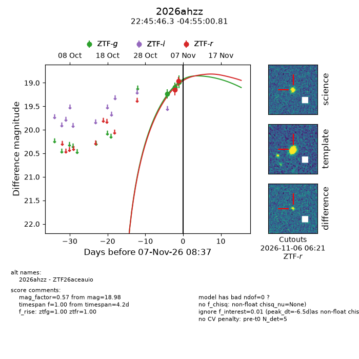
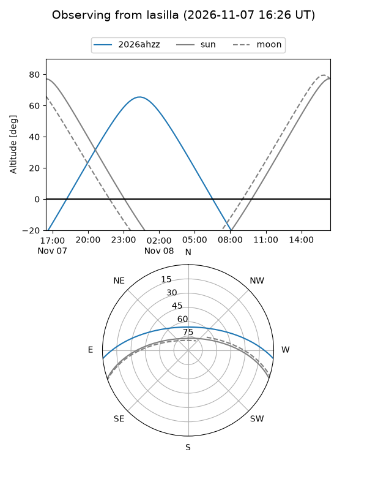
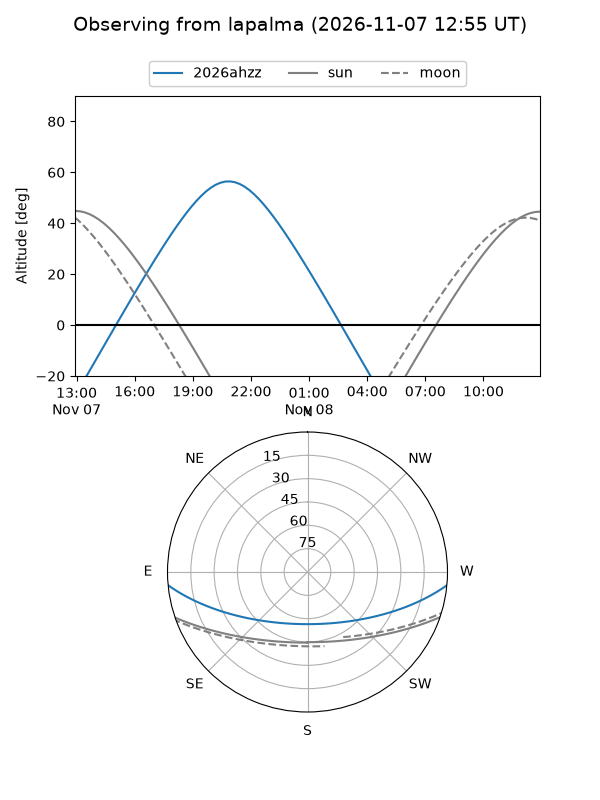
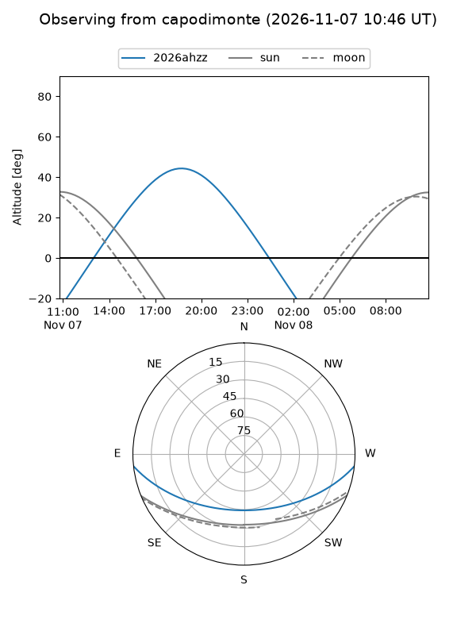
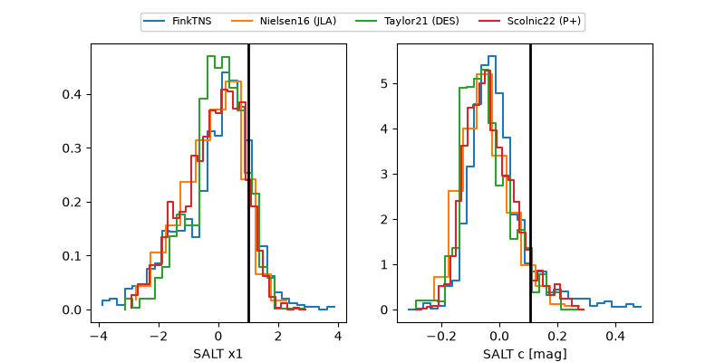

2026ahzz
Target 2026ahzz at 2026-11-07 20:39
Aliases and brokers:
FINK-ZTF: ztf.fink-portal.org/ZTF26aceauio
Lasair-ZTF: lasair-ztf.lsst.ac.uk/objects/ZTF26aceauio
ALeRCE-ZTF: alerce.online/object/ZTF26aceauio
YSE-PZ: ziggy.ucolick.org/yse/transient_detail/2026ahzz
TNS name: wis-tns.org/object/2026ahzz
Direct TNS query: direct search
alt names
ZTF26aceauio (ztf,fink_ztf)
2026ahzz (tns,yse)
Coordinates:
equatorial (ra, dec) = 341.4428,-4.91689
equatorial (HMS+DMS) = 22:45:46.28,-04:55:00.81
galactic (l, b) = (63.8810,-52.73116)
Flags:
peak dt: -6.0
Photometry:
last ztfg=18.98, ztfr=18.97
3 ztfg, 2 ztfr detections
Lightcurve

Visibility



Additional plots
